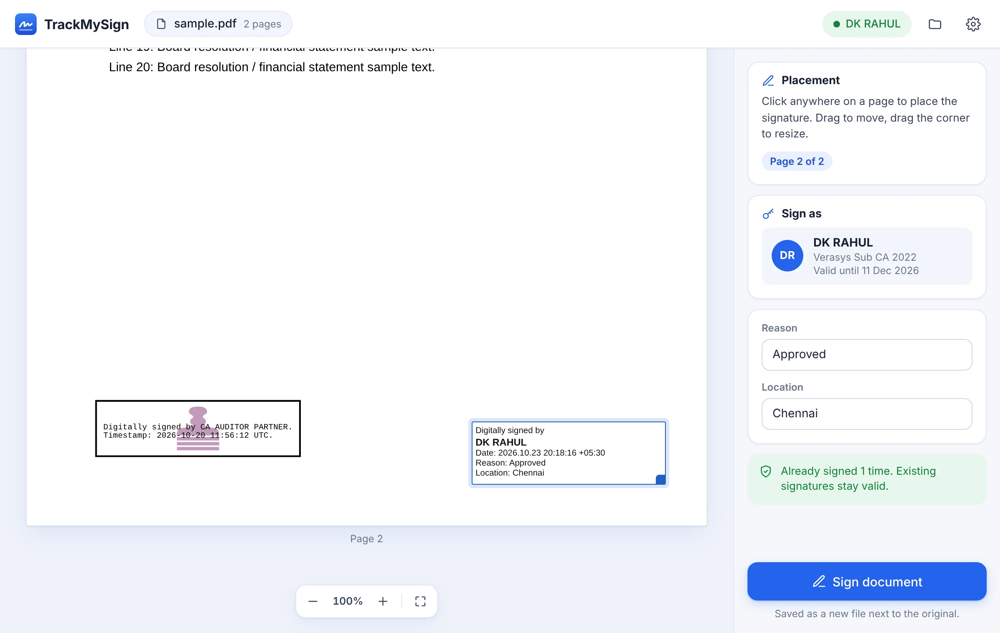
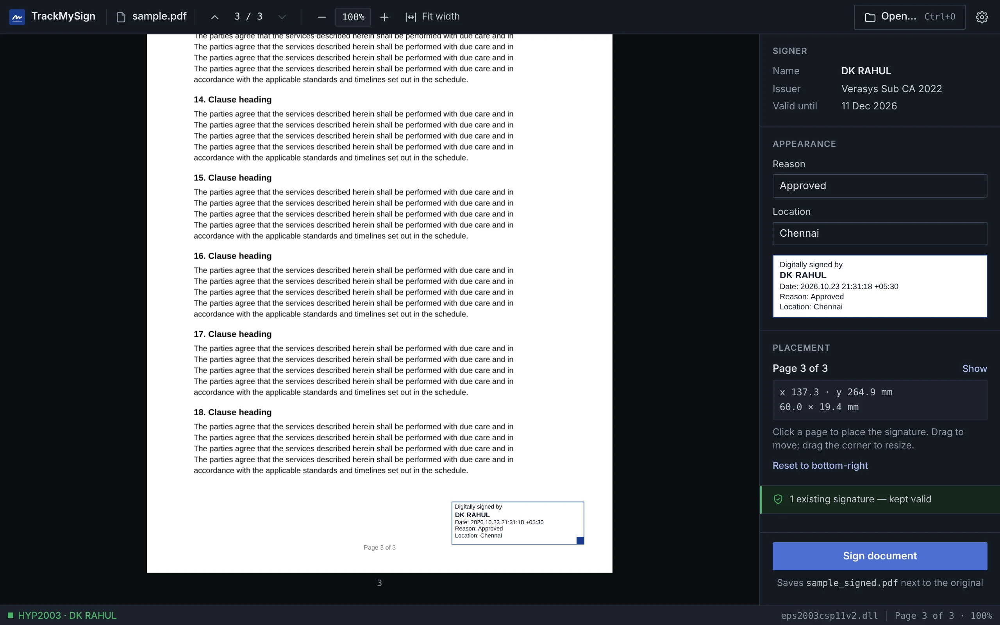

v0.1.1 · Free · Open source · MIT
Sign PDFs with your DSC token.
A small desktop app for Windows and macOS. Plug in your Class 3 token, place the signature, enter your PIN. Adobe Reader shows it as valid, and signatures already on the document stay valid.
- Platforms
- Windows 10/11 · macOS 11+
- Network
- None — works offline
- Account
- Not needed
EXAMPLE VENTURES PRIVATE LIMITED
CIN U72900TN2021PTC000000 · Sample document
Certified true copy of the resolution passed at the meeting of the Board of Directors held on 23 October 2026
RESOLVED THAT the audited financial statements for the financial year ended 31 March 2026, together with the Board's report and the auditor's report thereon, be and are hereby approved.
RESOLVED FURTHER THAT any director of the Company be authorised to sign the said statements digitally and file them with the Registrar of Companies.
- Ready. Token: HYP2003 · DSC: YOUR NAME (Class 3)
How it works
Your original bytes are never rewritten.
Many PDF tools re-save the whole file when they add a signature. That silently invalidates the auditor's or co-director's signature already on it. TrackMySign appends its signature after the last byte, the way the PDF standard intends for documents signed by more than one person.
The whole file is regenerated. Byte offsets move, and the earlier signature reports “document has been modified”.
Bytes 0 to the original end stay identical. Your signature, its appearance and a new cross-reference table are added after them.
-
Open the PDF
Drag it into the window. The app finds your token through its own PKCS#11 driver, the same one that came with the token.
-
Place the signature
Click anywhere on any page; drag to move, drag the corner to resize. Reason, location and position are remembered.
-
Enter the PIN
The token signs a SHA-256 hash; the private key never leaves it. The copy is saved as
name_signed.pdf.
The app
One window. No setup wizard, no account.


Specification
What it produces, exactly.
The signing engine is a small Rust library you can read in an afternoon. Every release is built by GitHub Actions from the public source.
- Signature format
- PKCS#7 / CMS detached adbe.pkcs7.detached, SHA-256, signingCertificateV2
- Write method
- Incremental update; original bytes never rewritten
- Token access
- PKCS#11 through the token's own driver; the private key never leaves the token
- Verified in
- Adobe Acrobat Reader — “Signature is valid”, trust via AATL
- Tested token
- Hypersecu HyperPKI HYP2003 eps2003csp11v2.dll
- Platforms
- Windows 10/11 x64 · macOS 11+ Apple Silicon and Intel
- Download
- 1.9 MB Windows · 5.3 MB macOS
- Privacy
- No network access, no account, no telemetry; the PIN is never stored
- Licence
- MIT
Download
Get TrackMySign v0.1.1
- Install your token's driver if it isn't installed yet (it comes with the token).
- Run the installer. It installs for your user only and needs no admin rights.
- If SmartScreen says “Windows protected your PC”, choose More info → Run anyway.
- Install your token's macOS driver from its vendor.
- Open the .dmg and drag TrackMySign into Applications.
- On first launch, if macOS blocks the app, right-click it and choose Open.
> trackmysign certs
1. DK RAHUL (Personal)
Issued by: Verasys Sub CA 2022
> trackmysign sign statements.pdf --reason "Approved"
Token PIN: ********
Signed: statements_signed.pdfFree code signing provided by SignPath.io, certificate by SignPath Foundation · Code signing policy
Build from source
Rust 1.80+ and Node 20+.
$ git clone https://github.com/rahuldk1105/trackmysign
$ cd trackmysign/apps/desktop && npm ci && npx tauri buildFAQ
Questions directors ask.
Is a signature made with TrackMySign legally valid?
The legal weight comes from your DSC, issued by a licensed Certifying Authority under the IT Act, 2000, not from the software that applies it. TrackMySign produces a standard PKCS#7 signature with your certificate, which Adobe Reader verifies like any other DSC signature.
Is my document uploaded anywhere?
No. The app has no server and makes no network requests. You can sign with the network cable unplugged.
Will it break signatures already on the PDF?
No. It writes an incremental update after the existing bytes instead of re-saving the file, which is what keeps earlier signatures valid.
Which tokens work?
Tested with Hypersecu HyperPKI HYP2003. Feitian ePass2003 uses the same driver family and is expected to work. For other PKCS#11 tokens, open an issue with the token's name and driver file and support can be added.
Can I use it for MCA filings?
It signs PDFs: financial statements, resolutions, attachments. MCA's own web forms are signed in the portal with the portal's signer utility.
Why does Windows warn me during install?
The installer isn't code-signed yet, so Windows doesn't recognise the publisher. Every release is built in public by GitHub Actions from the source in the repository.